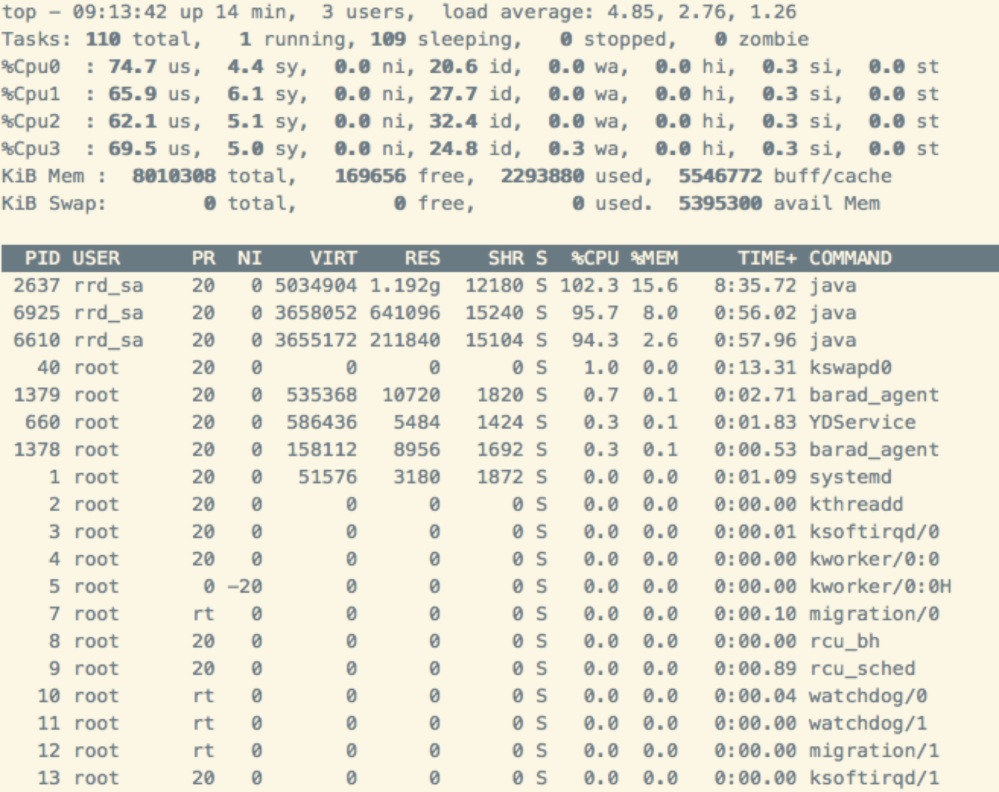
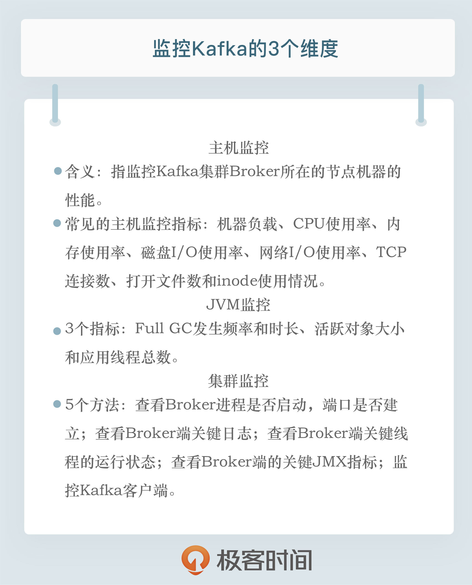

- 00 开篇词 为什么要学习Kafka？.md.html
- 01 消息引擎系统ABC.md.html
- 02 一篇文章带你快速搞定Kafka术语.md.html
- 03 Kafka只是消息引擎系统吗？.md.html
- 04 我应该选择哪种Kafka？.md.html
- 05 聊聊Kafka的版本号.md.html
- 06 Kafka线上集群部署方案怎么做？.md.html
- 07 最最最重要的集群参数配置（上）.md.html
- 08 最最最重要的集群参数配置（下）.md.html
- 09 生产者消息分区机制原理剖析.md.html
- 10 生产者压缩算法面面观.md.html
- 11 无消息丢失配置怎么实现？.md.html
- 12 客户端都有哪些不常见但是很高级的功能？.md.html
- 13 Java生产者是如何管理TCP连接的？.md.html
- 14 幂等生产者和事务生产者是一回事吗？.md.html
- 15 消费者组到底是什么？.md.html
- 16 揭开神秘的“位移主题”面纱.md.html
- 17 消费者组重平衡能避免吗？.md.html
- 18 Kafka中位移提交那些事儿.md.html
- 19 CommitFailedException异常怎么处理？.md.html
- 20 多线程开发消费者实例.md.html
- 21 Java 消费者是如何管理TCP连接的_.md.html
- 22 消费者组消费进度监控都怎么实现？.md.html
- 23 Kafka副本机制详解.md.html
- 24 请求是怎么被处理的？.md.html
- 25 消费者组重平衡全流程解析.md.html
- 26 你一定不能错过的Kafka控制器.md.html
- 27 关于高水位和Leader Epoch的讨论.md.html
- 28 主题管理知多少_.md.html
- 29 Kafka动态配置了解下？.md.html
- 30 怎么重设消费者组位移？.md.html
- 31 常见工具脚本大汇总.md.html
- 32 KafkaAdminClient：Kafka的运维利器.md.html
- 33 Kafka认证机制用哪家？.md.html
- 34 云环境下的授权该怎么做？.md.html
- 35 跨集群备份解决方案MirrorMaker.md.html
- 36 你应该怎么监控Kafka？.md.html
- 37 主流的Kafka监控框架.md.html
- 38 调优Kafka，你做到了吗？.md.html
- 39 从0搭建基于Kafka的企业级实时日志流处理平台.md.html
- 40 Kafka Streams与其他流处理平台的差异在哪里？.md.html
- 41 Kafka Streams DSL开发实例.md.html
- 42 Kafka Streams在金融领域的应用.md.html
- 加餐 搭建开发环境、阅读源码方法、经典学习资料大揭秘.md.html
- 用户故事 黄云：行百里者半九十.md.html
- 结束语 以梦为马，莫负韶华！.md.html
- 捐赠
36 你应该怎么监控Kafka？
你好，我是胡夕。今天我要和你分享的主题是：如何监控Kafka。
监控Kafka，历来都是个老大难的问题。无论是在我维护的微信公众号，还是Kafka QQ群里面，大家问得最多的问题，一定是Kafka的监控。大家提问的内容看似五花八门，但真正想了解的，其实都是监控这点事，也就是我应该监控什么，怎么监控。那么今天，我们就来详细聊聊这件事。
我个人认为，和头疼医头、脚疼医脚的问题类似，在监控Kafka时，如果我们只监控Broker的话，就难免以偏概全。单个Broker启动的进程虽然属于Kafka应用，但它也是一个普通的Java进程，更是一个操作系统进程。因此，我觉得有必要从Kafka主机、JVM和Kafka集群本身这三个维度进行监控。
主机监控
主机级别的监控，往往是揭示线上问题的第一步。所谓主机监控，指的是监控Kafka集群Broker所在的节点机器的性能。通常来说，一台主机上运行着各种各样的应用进程，这些进程共同使用主机上的所有硬件资源，比如CPU、内存或磁盘等。
常见的主机监控指标包括但不限于以下几种：
- 机器负载（Load）
- CPU使用率
- 内存使用率，包括空闲内存（Free Memory）和已使用内存（Used Memory）
- 磁盘I/O使用率，包括读使用率和写使用率
- 网络I/O使用率
- TCP连接数
- 打开文件数
- inode使用情况
考虑到我们并不是要系统地学习调优与监控主机性能，因此我并不打算对上面的每一个指标都进行详细解释，我重点分享一下机器负载和CPU使用率的监控方法。我会以Linux平台为例来进行说明，其他平台应该也是类似的。
首先，我们来看一张图片。我在Kafka集群的某台Broker所在的主机上运行top命令，输出的内容如下图所示：

在图片的右上角，我们可以看到load average的3个值：4.85，2.76和1.26，它们分别代表过去1分钟、过去5分钟和过去15分钟的Load平均值。在这个例子中，我的主机总共有4个CPU核，但Load值却达到了4.85，这就说明，一定有进程暂时“抢不到”任何CPU资源。同时，Load值一直在增加，也说明这台主机上的负载越来越大。
举这个例子，其实我真正想说的是CPU使用率。很多人把top命令中“%CPU”列的输出值当作CPU使用率。比如，在上面这张图中，PID为2637的Java进程是Broker进程，它对应的“%CPU”的值是102.3。你不要认为这是CPU的真实使用率，这列值的真实含义是进程使用的所有CPU的平均使用率，只是top命令在显示的时候转换成了单个CPU。因此，如果是在多核的主机上，这个值就可能会超过100。在这个例子中，我的主机有4个CPU核，总CPU使用率是102.3，那么，平均每个CPU的使用率大致是25%。
JVM监控
除了主机监控之外，另一个重要的监控维度就是JVM监控。Kafka Broker进程是一个普通的Java进程，所有关于JVM的监控手段在这里都是适用的。
监控JVM进程主要是为了让你全面地了解你的应用程序（Know Your Application）。具体到Kafka而言，就是全面了解Broker进程。比如，Broker进程的堆大小（HeapSize）是多少、各自的新生代和老年代是多大？用的是什么GC回收器？这些监控指标和配置参数林林总总，通常你都不必全部重点关注，但你至少要搞清楚Broker端JVM进程的Minor GC和Full GC的发生频率和时长、活跃对象的总大小和JVM上应用线程的大致总数，因为这些数据都是你日后调优Kafka Broker的重要依据。
我举个简单的例子。假设一台主机上运行的Broker进程在经历了一次Full GC之后，堆上存活的活跃对象大小是700MB，那么在实际场景中，你几乎可以安全地将老年代堆大小设置成该数值的1.5倍或2倍，即大约1.4GB。不要小看700MB这个数字，它是我们设定Broker堆大小的重要依据！
很多人会有这样的疑问：我应该怎么设置Broker端的堆大小呢？其实，这就是最合理的评估方法。试想一下，如果你的Broker在Full GC之后存活了700MB的数据，而你设置了堆大小为16GB，这样合理吗？对一个16GB大的堆执行一次GC要花多长时间啊？！
因此，我们来总结一下。要做到JVM进程监控，有3个指标需要你时刻关注：
- Full GC发生频率和时长。这个指标帮助你评估Full GC对Broker进程的影响。长时间的停顿会令Broker端抛出各种超时异常。
- 活跃对象大小。这个指标是你设定堆大小的重要依据，同时它还能帮助你细粒度地调优JVM各个代的堆大小。
- 应用线程总数。这个指标帮助你了解Broker进程对CPU的使用情况。
总之，你对Broker进程了解得越透彻，你所做的JVM调优就越有效果。
谈到具体的监控，前两个都可以通过GC日志来查看。比如，下面的这段GC日志就说明了GC后堆上的存活对象大小。
2019-07-30T09:13:03.809+0800: 552.982: [GC cleanup 827M->645M(1024M), 0.0019078 secs]
这个Broker JVM进程默认使用了G1的GC算法，当cleanup步骤结束后，堆上活跃对象大小从827MB缩减成645MB。另外，你可以根据前面的时间戳来计算每次GC的间隔和频率。
自0.9.0.0版本起，社区将默认的GC收集器设置为G1，而G1中的Full GC是由单线程执行的，速度非常慢。因此，你一定要监控你的Broker GC日志，即以kafkaServer-gc.log开头的文件。注意不要出现Full GC的字样。一旦你发现Broker进程频繁Full GC，可以开启G1的-XX:+PrintAdaptiveSizePolicy开关，让JVM告诉你到底是谁引发了Full GC。
集群监控
说完了主机和JVM监控，现在我来给出监控Kafka集群的几个方法。
1.查看Broker进程是否启动，端口是否建立。
千万不要小看这一点。在很多容器化的Kafka环境中，比如使用Docker启动Kafka Broker时，容器虽然成功启动了，但是里面的网络设置如果配置有误，就可能会出现进程已经启动但端口未成功建立监听的情形。因此，你一定要同时检查这两点，确保服务正常运行。
2.查看Broker端关键日志。
这里的关键日志，主要涉及Broker端服务器日志server.log，控制器日志controller.log以及主题分区状态变更日志state-change.log。其中，server.log是最重要的，你最好时刻对它保持关注。很多Broker端的严重错误都会在这个文件中被展示出来。因此，如果你的Kafka集群出现了故障，你要第一时间去查看对应的server.log，寻找和定位故障原因。
3.查看Broker端关键线程的运行状态。
这些关键线程的意外挂掉，往往无声无息，但是却影响巨大。比方说，Broker后台有个专属的线程执行Log Compaction操作，由于源代码的Bug，这个线程有时会无缘无故地“死掉”，社区中很多Jira都曾报出过这个问题。当这个线程挂掉之后，作为用户的你不会得到任何通知，Kafka集群依然会正常运转，只是所有的Compaction操作都不能继续了，这会导致Kafka内部的位移主题所占用的磁盘空间越来越大。因此，我们有必要对这些关键线程的状态进行监控。
可是，一个Kafka Broker进程会启动十几个甚至是几十个线程，我们不可能对每个线程都做到实时监控。所以，我跟你分享一下我认为最重要的两类线程。在实际生产环境中，监控这两类线程的运行情况是非常有必要的。
- Log Compaction线程，这类线程是以kafka-log-cleaner-thread开头的。就像前面提到的，此线程是做日志Compaction的。一旦它挂掉了，所有Compaction操作都会中断，但用户对此通常是无感知的。
- 副本拉取消息的线程，通常以ReplicaFetcherThread开头。这类线程执行Follower副本向Leader副本拉取消息的逻辑。如果它们挂掉了，系统会表现为对应的Follower副本不再从Leader副本拉取消息，因而Follower副本的Lag会越来越大。
不论你是使用jstack命令，还是其他的监控框架，我建议你时刻关注Broker进程中这两类线程的运行状态。一旦发现它们状态有变，就立即查看对应的Kafka日志，定位原因，因为这通常都预示会发生较为严重的错误。
4.查看Broker端的关键JMX指标。
Kafka提供了超多的JMX指标供用户实时监测，我来介绍几个比较重要的Broker端JMX指标：
- BytesIn/BytesOut：即Broker端每秒入站和出站字节数。你要确保这组值不要接近你的网络带宽，否则这通常都表示网卡已被“打满”，很容易出现网络丢包的情形。
- NetworkProcessorAvgIdlePercent：即网络线程池线程平均的空闲比例。通常来说，你应该确保这个JMX值长期大于30%。如果小于这个值，就表明你的网络线程池非常繁忙，你需要通过增加网络线程数或将负载转移给其他服务器的方式，来给该Broker减负。
- RequestHandlerAvgIdlePercent：即I/O线程池线程平均的空闲比例。同样地，如果该值长期小于30%，你需要调整I/O线程池的数量，或者减少Broker端的负载。
- UnderReplicatedPartitions：即未充分备份的分区数。所谓未充分备份，是指并非所有的Follower副本都和Leader副本保持同步。一旦出现了这种情况，通常都表明该分区有可能会出现数据丢失。因此，这是一个非常重要的JMX指标。
- ISRShrink/ISRExpand：即ISR收缩和扩容的频次指标。如果你的环境中出现ISR中副本频繁进出的情形，那么这组值一定是很高的。这时，你要诊断下副本频繁进出ISR的原因，并采取适当的措施。
- ActiveControllerCount：即当前处于激活状态的控制器的数量。正常情况下，Controller所在Broker上的这个JMX指标值应该是1，其他Broker上的这个值是0。如果你发现存在多台Broker上该值都是1的情况，一定要赶快处理，处理方式主要是查看网络连通性。这种情况通常表明集群出现了脑裂。脑裂问题是非常严重的分布式故障，Kafka目前依托ZooKeeper来防止脑裂。但一旦出现脑裂，Kafka是无法保证正常工作的。
其实，Broker端还有很多很多JMX指标，除了上面这些重要指标，你还可以根据自己业务的需要，去官网查看其他JMX指标，把它们集成进你的监控框架。
5.监控Kafka客户端。
客户端程序的性能同样需要我们密切关注。不管是生产者还是消费者，我们首先要关心的是客户端所在的机器与Kafka Broker机器之间的网络往返时延（Round-Trip Time，RTT）。通俗点说，就是你要在客户端机器上ping一下Broker主机IP，看看RTT是多少。
我曾经服务过一个客户，他的Kafka生产者TPS特别低。我登到机器上一看，发现RTT是1秒。在这种情况下，无论你怎么调优Kafka参数，效果都不会太明显，降低网络时延反而是最直接有效的办法。
除了RTT，客户端程序也有非常关键的线程需要你时刻关注。对于生产者而言，有一个以kafka-producer-network-thread开头的线程是你要实时监控的。它是负责实际消息发送的线程。一旦它挂掉了，Producer将无法正常工作，但你的Producer进程不会自动挂掉，因此你有可能感知不到。对于消费者而言，心跳线程事关Rebalance，也是必须要监控的一个线程。它的名字以kafka-coordinator-heartbeat-thread开头。
除此之外，客户端有一些很重要的JMX指标，可以实时告诉你它们的运行情况。
从Producer角度，你需要关注的JMX指标是request-latency，即消息生产请求的延时。这个JMX最直接地表征了Producer程序的TPS；而从Consumer角度来说，records-lag和records-lead是两个重要的JMX指标。我们在专栏第22讲解释过这两个指标的含义，这里我就不再赘述了。总之，它们直接反映了Consumer的消费进度。如果你使用了Consumer Group，那么有两个额外的JMX指标需要你关注下，一个是join rate，另一个是sync rate。它们说明了Rebalance的频繁程度。如果在你的环境中，它们的值很高，那么你就需要思考下Rebalance频繁发生的原因了。
小结
好了，我们来小结一下。今天，我介绍了监控Kafka的方方面面。除了监控Kafka集群，我还推荐你从主机和JVM的维度进行监控。对主机的监控，往往是我们定位和发现问题的第一步。JVM监控同样重要。要知道，很多Java进程碰到的性能问题是无法通过调整Kafka参数是解决的。最后，我罗列了一些比较重要的Kafka JMX指标。在下一讲中，我会专门介绍一下如何使用各种工具来查看这些JMX指标。

开放讨论
请分享一下你在监控Kafka方面的心得，以及你的运维技巧。
欢迎写下你的思考和答案，我们一起讨论。如果你觉得有所收获，也欢迎把文章分享给你的朋友。
© 2019 - 2023 Liangliang Lee. Powered by gin and hexo-theme-book.